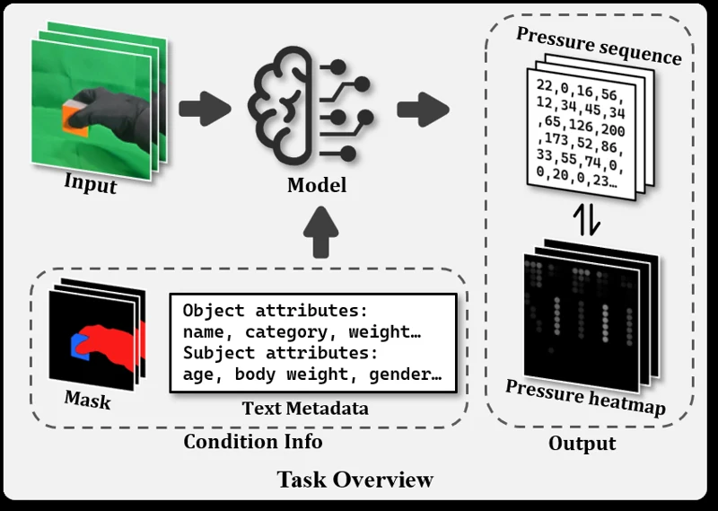
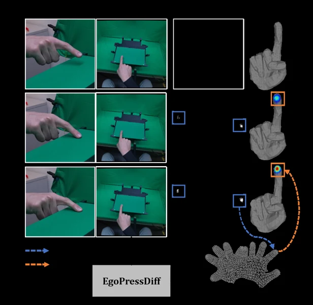
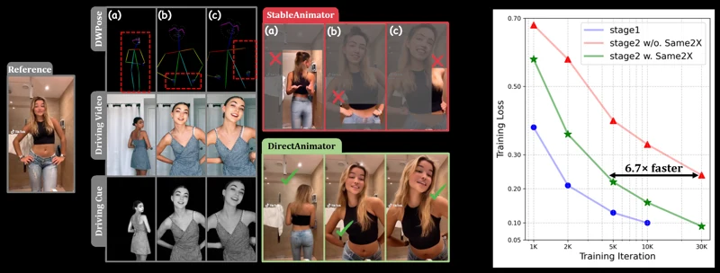
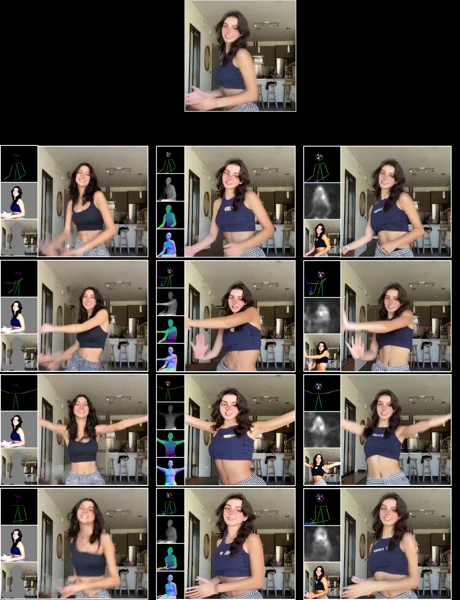

Ph.D. student · Tsinghua University
I study visual–tactile interaction and generative models for understanding hand pose, contact, and pressure, with applications to robot learning and contact-rich manipulation. Previously, I worked as an algorithm researcher at SenseTime on railway inspection and industrial defect detection.
Publications
Research in visual–tactile interaction, video generation, and industrial vision. Selected work is highlighted.
 | Yuan Zeng, Yujia Shi, Tiao Tan, Xingting Li, Yaqi Qin, Zongqing Lu, Wenming Yang, Jing-Hao Xue, Qingmin Liao ICML 2026 · Spotlight Paper / Project / Code An egocentric visual–tactile dataset for everyday-object grasping, with video diffusion models that recover dynamic full-hand pressure from RGB video. |
 | Yuan Zeng, Zilue Gao, Yujia Shi, Zongqing Lu, Wenming Yang, Qingmin Liao ICASSP 2026 Paper / Project Generates continuous UV-domain hand-pressure maps conditioned on egocentric vision, hand pose, mesh vertices, and depth; improves Volumetric IoU by over 34% relative to the baseline on EgoPressure. |
 | Yuan Zeng, Yujia Shi, Yuhao Yang, Dongxia Liu, Zongqing Lu, Wenming Yang, Qingmin Liao ICLR 2026 Paper / Project / Code DirectAnimator transfers motion and expression directly from driving videos. Same2X training improves cross-identity animation efficiency, identity preservation, and generation quality. |
 | Yuan Zeng, Yujia Shi, Zongqing Lu, Qingmin Liao ICASSP 2026 Paper / Project Training-free human image animation using preview-guided denoising. |
Detection & Industrial Vision | Yuan Zeng, Bin Song, Jie Guo, Yuwen Chen arXiv 2026 · Preprint Paper Proposal refinement for few-shot object detection. |
Detection & Industrial Vision | Yuan Zeng, Bin Song, Yuwen Chen, Xiaojiang Du, Mohsen Guizani IEEE Transactions on Sustainable Computing Paper Scale-insensitive few-shot object detection for edge computing. |
Detection & Industrial Vision | Yuwen Chen, Bin Song, Yuan Zeng, Xiaojiang Du, Mohsen Guizani Applied Soft Computing Paper Deep-learning-based fault diagnosis of railway catenary current-carrying rings. |
Detection & Industrial Vision | Yuwen Chen, Bin Song, Yuan Zeng, Xiaojiang Du, Mohsen Guizani Neural Computing & Applications Paper Deep learning for fault diagnosis of current-carrying rings in catenary systems. |
Detection & Industrial Vision | Chenchen Huang, Yuan Zeng ICMIP 2020 · Best Presentation Award Paper Deep-learning-based catenary-system fault diagnosis for the railway industry. |
Projects
From generative visual–tactile research to robot learning and deployed industrial vision systems.
Robotic Adhesive Scraping on Aircraft Panels
波音板材表面刮胶机器人
Tsinghua University · May 2026 – Present
Participated in teleoperation data collection and trained ACT and SmolVLA policies on a AgileX ALOHA robot holding a scraper. Demonstrated basic scraping actions for contact-rich surface processing.
Planned work: integrate tactile and wrist six-axis force/torque sensing for multimodal fine contact manipulation.
Switchgear Inspection and Operation Robot
变电间巡操机器人 · 按钮与旋钮操作
Hangzhou Zhiluo Technology · Mar. 2026 – Oct. 2026
Used an i2rt LinearBot wheeled dual-arm robot with a lift to operate buttons and rotary switches at different heights. Participated in mock worksite setup, teleoperation data collection, and ACT-based policy training.
Validated basic button-pressing and knob-turning actions in the mock scenario.
SenseRail C4: Railway Catenary Defect Detection
高铁接触网 4C 缺陷检测
SenseTime · Jul. 2021 – Apr. 2024
As of July 2023, the production system comprised 77 models covering 119 component types and 61 defect items. Optimized 11 loose-component defect items, reaching average recall of 93.45% at 1% FPR.
Led model iteration and deployment-platform upgrades; standardized documentation and optimization workflows for 79 inspection items. Extended evaluation and algorithm exploration to metro C4, depot robots, and domain-specific Chinese-CLIP models.
SenseTime 2022 brand film (1:20–2:02)
Multi-Head Detection and 3D Synthetic Data
多头检测与三维仿真数据
SenseTime · Nov. 2022 – Mar. 2023
Collaborated on 3D railway-component modeling and generated synthetic data with BlenderProc, validating its effectiveness on three inspection items.
Implemented multi-head detection training and evaluation; validated feasibility on VOC and matched single-head accuracy for adding and optimizing classes on a key business item.
PSAC Industrial Defect Training Framework
PSAC 工业缺陷训练框架
SenseTime · Jul. 2021 – Apr. 2022
One of the main developers of a framework supporting classification, supervised defect detection, localization/segmentation, and multi-channel industrial imaging.
Implemented semi-supervised classification with Mean Teacher and MPL, SAM training optimization, and linked evaluation across multiple test sets.
Railway Catenary 2C Dropper Defect Detection
高铁接触网 2C 吊弦缺陷检测
Xidian University · May 2019 – Mar. 2021
Developed detection algorithms for slack, broken, and missing droppers, improving multi-scale features and small-object/few-shot detection. Achieved an 85% detection rate with a 5% false-positive rate in real-world scenes.
Independently built a Flask inference service integrating similar-frame filtering and multi-video, multi-process detection into the business system.
Last updated: October 16, 2026.